Text
geom_text adds text directly to the plot. geom_label draws
a rectangle behind the text, making it easier to read.
geom_label(mapping = NULL, data = NULL, stat = "identity", position = "identity", ..., parse = FALSE, nudge_x = 0, nudge_y = 0, label.padding = unit(0.25, "lines"), label.r = unit(0.15, "lines"), label.size = 0.25, na.rm = FALSE, show.legend = NA, inherit.aes = TRUE) geom_text(mapping = NULL, data = NULL, stat = "identity", position = "identity", ..., parse = FALSE, nudge_x = 0, nudge_y = 0, check_overlap = FALSE, na.rm = FALSE, show.legend = NA, inherit.aes = TRUE)
Arguments
- mapping
- Set of aesthetic mappings created by
aesoraes_. If specified andinherit.aes = TRUE(the default), it is combined with the default mapping at the top level of the plot. You must supplymappingif there is no plot mapping. - data
- The data to be displayed in this layer. There are three
options:
If
NULL, the default, the data is inherited from the plot data as specified in the call toggplot. Adata.frame, or other object, will override the plot data. All objects will be fortified to produce a data frame. Seefortifyfor which variables will be created. Afunctionwill be called with a single argument, the plot data. The return value must be adata.frame., and will be used as the layer data. - stat
- The statistical transformation to use on the data for this layer, as a string.
- position
- Position adjustment, either as a string, or the result of a call to a position adjustment function.
- ...
- other arguments passed on to
layer. These are often aesthetics, used to set an aesthetic to a fixed value, likecolor = "red"orsize = 3. They may also be parameters to the paired geom/stat. - parse
- If TRUE, the labels will be parsed into expressions and displayed as described in ?plotmath
- nudge_x, nudge_y
- Horizontal and vertical adjustment to nudge labels by. Useful for offsetting text from points, particularly on discrete scales.
- label.padding
- Amount of padding around label. Defaults to 0.25 lines.
- label.r
- Radius of rounded corners. Defaults to 0.15 lines.
- label.size
- Size of label border, in mm.
- na.rm
- If
FALSE, the default, missing values are removed with a warning. IfTRUE, missing values are silently removed. - show.legend
- logical. Should this layer be included in the legends?
NA, the default, includes if any aesthetics are mapped.FALSEnever includes, andTRUEalways includes. - inherit.aes
- If
FALSE, overrides the default aesthetics, rather than combining with them. This is most useful for helper functions that define both data and aesthetics and shouldn't inherit behaviour from the default plot specification, e.g.borders. - check_overlap
- If
TRUE, text that overlaps previous text in the same layer will not be plotted.
Details
Note the the "width" and "height" of a text element are 0, so stacking and dodging text will not work by default, and axis limits are not automatically expanded to include all text. Obviously, labels do have height and width, but they are physical units, not data units. The amount of space they occupy on that plot is not constant in data units: when you resize a plot, labels stay the same size, but the size of the axes changes.
Aesthetics
\aesthetics{geom}{text}
<code>geom_label</code>
Currently geom_label does not support the rot parameter and
is considerably slower than geom_text. The fill aesthetic
controls the background colour of the label.
Alignment
You can modify text alignment with the vjust and hjust
aesthetics. These can either be a number between 0 (right/bottom) and
1 (top/left) or a character ("left", "middle", "right", "bottom", "center",
"top"). There are two special alignments: "inward" and "outward".
Inward always aligns text towards the center, and outward aligns
it away from the center
Examples
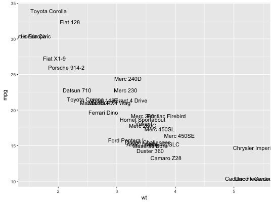# Avoid overlaps p + geom_text(check_overlap = TRUE)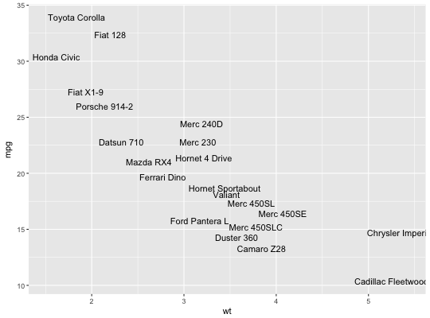# Labels with background p + geom_label()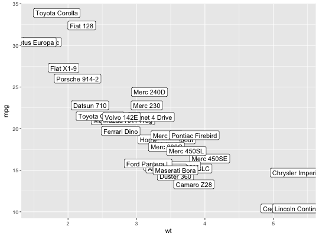# Change size of the label p + geom_text(size = 10)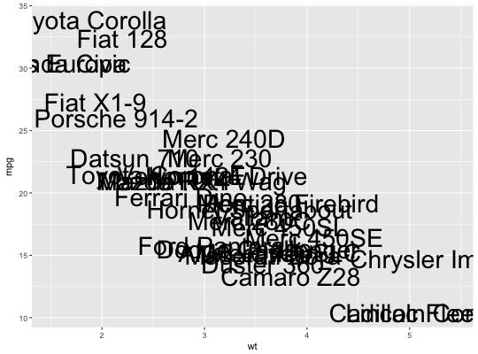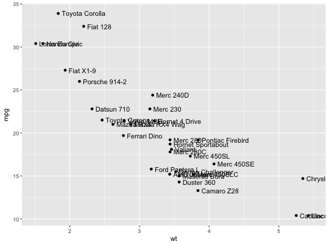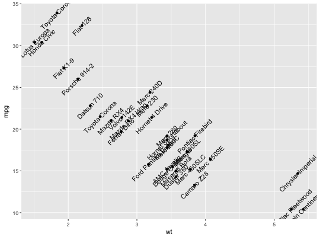
## Not run: ------------------------------------ # # Doesn't work on all systems # p + geom_text(family = "Times New Roman") ## --------------------------------------------- # Add aesthetic mappings p + geom_text(aes(colour = factor(cyl)))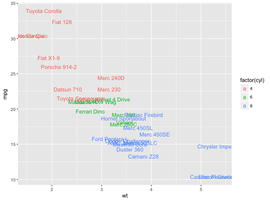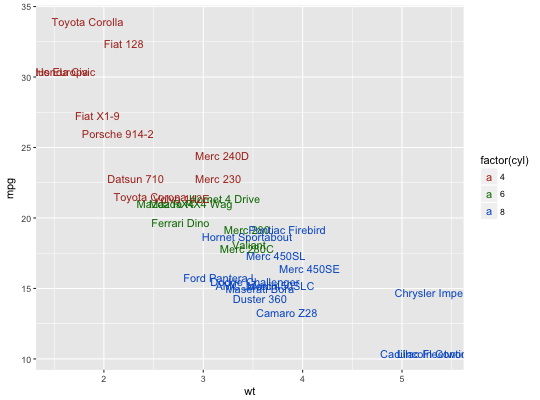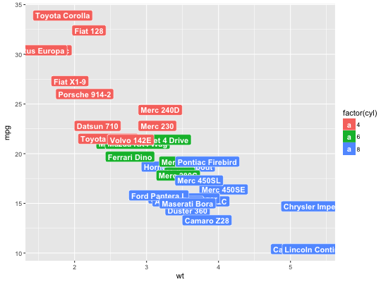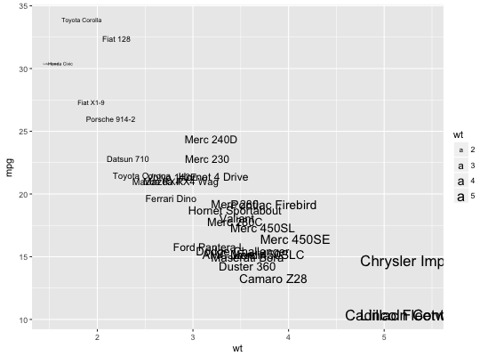# Scale height of text, rather than sqrt(height) p + geom_text(aes(size = wt)) + scale_radius(range = c(3,6))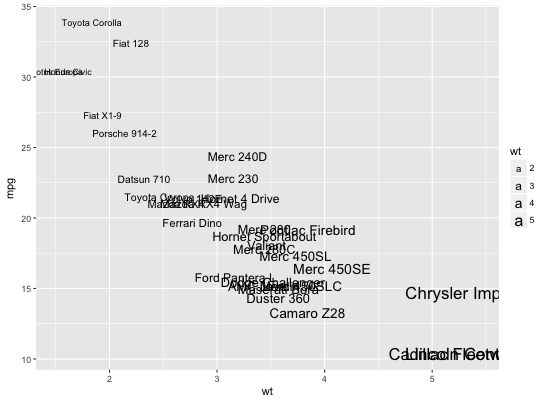# You can display expressions by setting parse = TRUE. The # details of the display are described in ?plotmath, but note that # geom_text uses strings, not expressions. p + geom_text(aes(label = paste(wt, "^(", cyl, ")", sep = "")), parse = TRUE)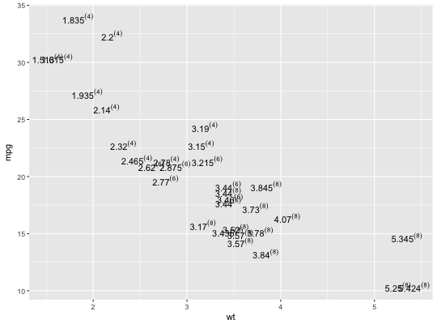# Add a text annotation p + geom_text() + annotate("text", label = "plot mpg vs. wt", x = 2, y = 15, size = 8, colour = "red")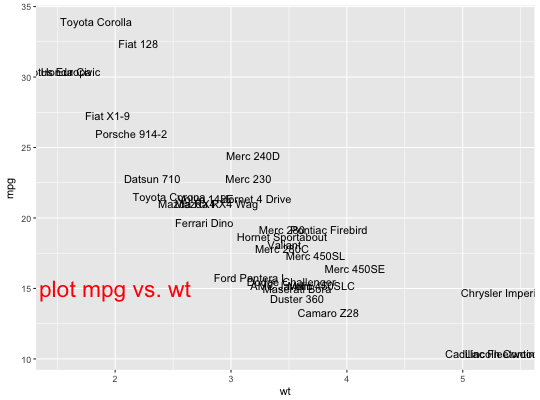